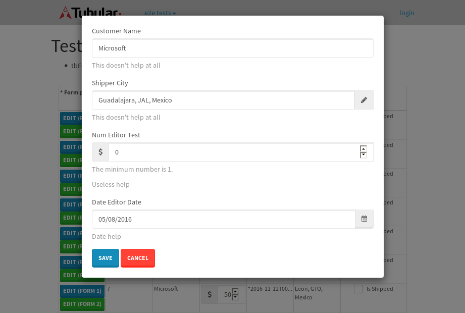

tbColumn.Grid Sorting - 30.107sTests: 5Skipped: 0Failures: 0 should sort data in ascending order then on descending order when sorting by Order Id column - 7.321sTests passed: 100.00%should order data in ascending order when click-sorting an unsorted text column - 5.36sTests passed: 100.00%should order data in descending order when click-sorting an ascending-sorted text column - 6.676sTests passed: 100.00%should order data in ascending order when click-sorting an unsorted date column - 5.235sTests passed: 100.00%should order data in descending order when click-sorting twice an unsorted date column - 5.514sTests passed: 100.00%
tbSingleForm.Form validations - 3.178sTests: 2Skipped: 0Failures: 0 should have an empty required field - 2.157sTests passed: 100.00%should not be able to click on save - 1.021sTests passed: 100.00%
Tubular Filters.tbColumnFilter - 107.022sTests: 12Skipped: 0Failures: 0 should cancel filtering when clicking outside filter-popover - 9.052sTests passed: 100.00%should disable Value text-input for "None" filter - 6.673sTests passed: 100.00%should disable apply button for "None" filter - 7.017sTests passed: 100.00%should decorate popover button when showing data is being filtered for its column - 11.944sTests passed: 100.00%should correctly filter data for the "Equals" filtering option - 8.599sTests passed: 100.00%should correctly filter data for the "Not Equals" filtering option - 8.144sTests passed: 100.00%should correctly filter data for the "Contains" filtering option - 8.622sTests passed: 100.00%should correctly filter data for the "Not Contains" filtering option - 8.296sTests passed: 100.00%should correctly filter data for the "Starts With" filtering option - 6.899sTests passed: 100.00%should correctly filter data for the "Not Starts With" filtering option - 6.82sTests passed: 100.00%should correctly filter data for the "Ends With" filtering option - 6.829sTests passed: 100.00%should correctly filter data for the "Not Ends With" filtering option - 6.965sTests passed: 100.00%
Tubular Filters.tbColumnDateTimeFilter - 135.807sTests: 12Skipped: 0Failures: 0 should cancel filtering when clicking outside filter-popover - 7.242sTests passed: 100.00%should disable Value text-input for "None" filter - 6.647sTests passed: 100.00%should disable apply button for "None" filter - 6.909sTests passed: 100.00%should clear filtering when clicking on Clean button - 18.111sTests passed: 100.00%should decorate popover button when showing data is being filtered for its column - 11.797sTests passed: 100.00%should correctly filter data for the "Equals" filtering option - 6.893sTests passed: 100.00%should correctly filter data for the "Not Equals" filtering option - 7.379sTests passed: 100.00%should correctly filter data for the "Between" filtering option - 12.421sTests passed: 100.00%should correctly filter data for the "Greater-or-equal" filtering option - 12.063sTests passed: 100.00%should corretlly filter data for the "Greater" filtering option - 12.053sTests passed: 100.00%should correctly filter data for the "Less-or-equal" filtering option - 11.957sTests passed: 100.00%should correctly filter data for the "Less" filtering option - 11.755sTests passed: 100.00%
Tubular Filters.tbColumnOptionsFilter - 79.898sTests: 3Skipped: 0Failures: 0 should cancel filtering when clicking outside filter-popover - 8.862sTests passed: 100.00%should decorate popover button when showing data is being filtered for its column - 11.789sTests passed: 100.00%should filter column-elements in accordance to the selected filter when selecting a single option - 48.481sTests passed: 100.00%
Tubular Filters.tbTextSearch - 48.724sTests: 5Skipped: 0Failures: 0 min-chars is not set - 1.055sTests passed: 100.00%should filter data in searchable-column customer name to matching inputted text, starting from 3 characters - 6.795sTests passed: 100.00%should filter data in searchable-column shipper city to matching inputted text, starting from 3 characters - 12.406sTests passed: 100.00%should show clear button when there is inputted text only - 6.76sTests passed: 100.00%should clear filtering when clicking clear button - 16.239sTests passed: 100.00%
tbForm related components.tbCheckboxField - 6.44sTests: 2Skipped: 0Failures: 0 should save changes on "SAVE" - 3.098sTests passed: 100.00%should discard changes on "CANCEL" - 1.87sTests passed: 100.00%
tbForm related components.tbDropDownEditor - 11.398sTests: 5Skipped: 0Failures: 0 should set initial input value to the value of "value" attribute when defined - 1.702sTests passed: 100.00%should show the component name value in a label field when "showLabel" attribute is true - 1.599sTests passed: 100.00%should show a help field equal to this attribute, is present - 1.727sTests passed: 100.00%should submit modifications to item/server when clicking form "Save" - 3.396sTests passed: 100.00%should NOT submit modifications to item/server when clicking form "Cancel" - 2.096sTests passed: 100.00%
tbForm related components.tbTextArea - 15.931sTests: 7Skipped: 0Failures: 0 should set initial input value to the value of "value" attribute when defined - 1.812sTests passed: 100.00%should be invalidated when the number of chars is not in the range of "min" and "max" attributes - 2.247sTests passed: 100.00%should show the component name value in a label field when "showLabel" attribute is true - 2.257sTests passed: 100.00%should show a help field equal to this attribute, is present - 1.847sTests passed: 100.00%should require the field when the attribute "required" is true - 1.749sTests passed: 100.00%should submit modifications to item/server when clicking form "Save" - 3.105sTests passed: 100.00%should NOT submit modifications to item/server when clicking form "Cancel" - 2.273sTests passed: 100.00%
tbForm related components.tbDateEditor - 14.789sTests: 6Skipped: 0Failures: 2 should set initial date value to the value of "value" attribute when defined - 2.255sExpected false to be true.✗Tests passed: 0.00%should be invalidated when the date is not in the range of "min" and "max" attributes - 2.658sTests passed: 100.00%should show the component name value in a label field when "showLabel" attribute is true - 1.887sTests passed: 100.00%should show a help field equal to this attribute, is present - 1.828sTests passed: 100.00%should submit modifications to item/server when clicking form "Save" - 2.396sTests passed: 100.00%should NOT submit modifications to item/server when clicking form "Cancel" - 2.597sExpected false to be true.✗Tests passed: 0.00%
tbForm related components.tbTypeaheadEditor - 16.279sTests: 7Skipped: 0Failures: 0 should show an options list when there is an API-info/component entered-data - 2.024sTests passed: 100.00%should select the option clicked - 2.026sTests passed: 100.00%should show a "delete" button when an option/match is selected, and delete the option if button is clicked - 2.171sTests passed: 100.00%should show a label value equal to the component name when "showLabel" attribue is true - 1.87sTests passed: 100.00%should require a value when "require" attribute is true - 2.071sTests passed: 100.00%should submit modifications to item/server when clicking form "Save" - 3.078sTests passed: 100.00%should NOT submit modifications to item/server when clicking form "Cancel" - 2.475sTests passed: 100.00%
tbForm related components.tbSimpleEditor - 18.842sTests: 9Skipped: 0Failures: 0 should set initial input value to the value of "value" attribute when defined - 1.609sTests passed: 100.00%should be invalidated when the number of chars is not in the range of "min" and "max" attributes - 2.275sTests passed: 100.00%should show the component name value in a label field when "showLabel" attribute is true - 1.61sTests passed: 100.00%should set input placeholder to the value of "placeholder" attribute - 1.728sTests passed: 100.00%should validate the control using the "regex" attribute, if present - 1.722sTests passed: 100.00%should show a help field equal to this attribute, is present - 1.815sTests passed: 100.00%should require the field when the attribute "required" is true - 2.799sTests passed: 100.00%should submit modifications to item/server when clicking form "Save" - 2.803sTests passed: 100.00%should NOT submit modifications to item/server when clicking form "Cancel" - 1.925sTests passed: 100.00%
tbForm related components.tbNumericEditor - 15.878sTests: 7Skipped: 0Failures: 0 should set initial component value to the value of "value" attribute when defined - 1.98sTests passed: 100.00%should be invalidated when the entered number is not in the range of "min" and "max" attributes - 2.092sTests passed: 100.00%should show the component name value in a label field when "showLabel" attribute is true - 1.928sTests passed: 100.00%should show a help field equal to this attribute, is present - 1.83sTests passed: 100.00%should require the field when the attribute "required" is true - 2.347sTests passed: 100.00%should submit modifications to item/server when clicking form "Save" - 2.902sTests passed: 100.00%should NOT submit modifications to item/server when clicking form "Cancel" - 1.962sTests passed: 100.00%
tbForm Connection Error NoModelKey - 3.563sTests: 1Skipped: 0Failures: 0 tbForm connection error functionality - 0.447sTests passed: 100.00%
tbForm Connection Error NoServerUrl - 2.305sTests: 1Skipped: 0Failures: 0 tbForm connection error functionality - 0.439sTests passed: 100.00%
tbGridComponents - 33.288sTests: 6Skipped: 0Failures: 4 should add item with newRow method - 5.646sExpected 'EDIT REMOVE TEST' not to be 'EDIT REMOVE TEST'.✗Tests passed: 50.00%should add item with newRow method and cancel action - 1.185sTests passed: 100.00%should update item with tbSaveButton - 1.767sExpected '' to be 'TEST'.✗Tests passed: 0.00%should NOT update item on cancel Update action - 0.984sFailed: ElementNotVisibleError✗Tests passed: 0.00%should remove item with tbRemoveButton - 21.253sExpected 66 not to be 66, 'should remove the row from the table'.✗Tests passed: 50.00%should NOT remove item on cancel Remove action - 1.023sTests passed: 100.00%
tbGridPager.navigation buttons - 9.487sTests: 1Skipped: 0Failures: 0 should perform no action when clicking on the numbered navigation button corresponding to the current-showing results page - 1.257sTests passed: 100.00%
tbGridPager.navigation buttons.first/non-last results page related functionallity - 3.964sTests: 2Skipped: 0Failures: 0 should disable "first" and "previous" navigation buttons when in first results page - 1.877sTests passed: 100.00%should enable "last" and "next" navigation buttons when in a results page other than last - 2.087sTests passed: 100.00%
tbGridPager.navigation buttons.last/non-first results page related functionallity - 4.266sTests: 2Skipped: 0Failures: 0 should disable "last" and "next" navigation buttons when in last results page - 1.916sTests passed: 100.00%should enable "first" and "previous" navigation buttons when in a results page other than first - 2.349sTests passed: 100.00%
tbGridPager.page navigation - 8.465sTests: 5Skipped: 0Failures: 0 should go to next results page when clicking on next navigation button - 1.932sTests passed: 100.00%should go to previous results page when clicking on previous navigation button - 1.719sTests passed: 100.00%should go to last results page when clicking on last navigation button - 1.512sTests passed: 100.00%should go to first results page when clicking on first navigation button - 1.94sTests passed: 100.00%should go to corresponding results page when clicking on a numbered navigation button - 1.36sTests passed: 100.00%
tbGridPagerInfo - 5.476sTests: 2Skipped: 0Failures: 0 should show text in accordance to numbered of filter rows and current results-page - 2.018sTests passed: 100.00%should show count in footer - 0.485sTests passed: 100.00%
tbHttp - 16.864sTests: 8Skipped: 1Failures: 0 should be authenticated - 2.684sTests passed: 100.00%retrieve data - 2.37sTests passed: 100.00%should not login bad credentials - 2.37sTests passed: 100.00%should have a refresh token - 2.358sTests passed: 100.00%should remove authentication - 2.265sTests passed: 100.00%get method-Is not authenticated - 2.498sTests passed: 100.00%post method-Is not authenticated - 2.318sTests passed: 100.00%should regenerate access token on post - 0s***Skipped***Tests passed: 0%
tbPageSizeSelctor - 9.857sTests: 4Skipped: 0Failures: 0 should filter up to 10 data rows per page when selecting a page size of "10" - 2.531sTests passed: 100.00%should filter up to 20 data rows per page when selecting a page size of "20" - 1.919sTests passed: 100.00%should filter up to 50 data rows per page when selecting a page size of "50" - 2.086sTests passed: 100.00%should filter up to 100 data rows per page when selecting a page size of "100" - 1.851sTests passed: 100.00%
tbRowSelectable - 9.34sTests: 2Skipped: 0Failures: 0 selected rows - 4.237sTests passed: 100.00%unselected rows - 3.383sTests passed: 100.00%
tbSingleForm - 20.379sTests: 8Skipped: 0Failures: 1 should load correct info - 2.28sTests passed: 100.00%should change customer name - 2.302sTests passed: 100.00%should save it - 2.867sFailed: Element is not enabled✗Tests passed: 0.00%should clear the inputs - 2.41sTests passed: 100.00%should update - 3.08sTests passed: 100.00%should reset editor - 2.339sTests passed: 100.00%should not save if not Changes - 2.408sTests passed: 100.00%should not be able to click on save - 2.692sTests passed: 100.00%


{kind=link}